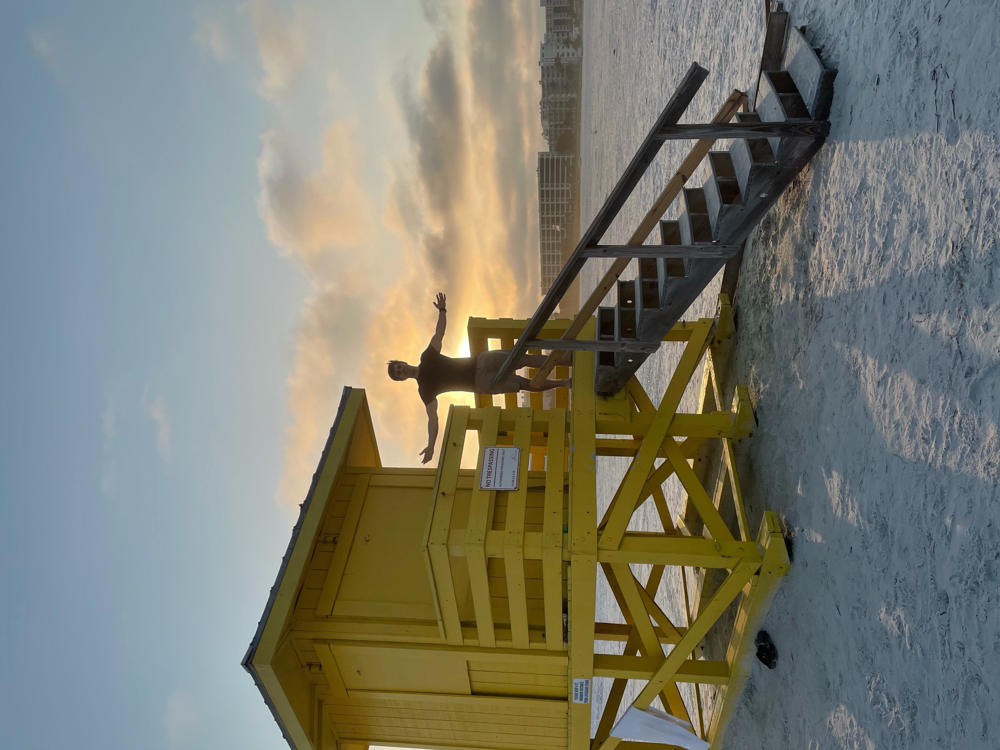
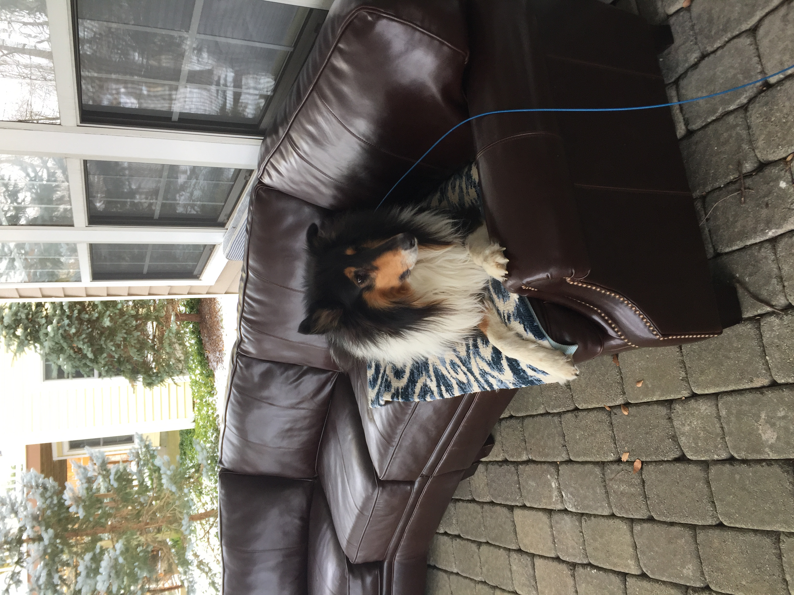

À propos de moi
Je poursuis une Maîtrise en Informatique à Tufts à plein temps. Je suis passionné par les applications de Machine Learning et Data Science au domaine médical. Mes recherches sont axées sur l'analyse des réseaux biologiques avec mon mentor, Professor Lenore Cowen. Au sein du groupe BCB de Tufts, j'explore le prédiction fonctionelle des réseaux d'interactions protéine-protéine et cross-species network embeddings.
Dans mon temps libre, j'adore faire du codage, skier, jouer au tennis, faire de l'exercice et lire.


